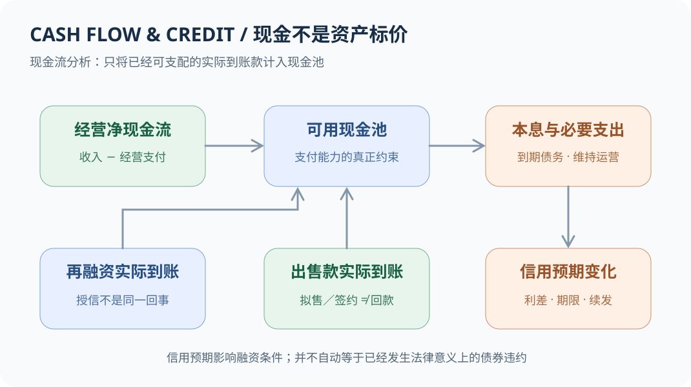

结论先行华发2026年11月的公开资料同时呈现三件事：按期付息的短期信号、利润与经营现金流的实质压力，以及通过资产安排和外部支持尝试修复融资的路径。它们可以同时成立，不能用其中任何一件取代其他两件。[S1] [S7]
01 · 先分清华发集团、上市公司和资产交易主体
原视频将“华发集团”“华发股份”“华发投资控股”“珠免”等企业放在一个叙事里，但它们的法人、债务发行主体、资产负债表及公开披露义务并不相同。集团合并报表反映控制范围，不能据此认定每家子公司与母公司可自由划拨全部现金。
分析一只债券，至少需要查发行人全名、债券代码、担保/增信、募集说明书中的交叉违约条款、还本付息日和受限资金。投资控股公司拟卖铧创股权的公告，不能与上市房企的销售现金流混成一个“华发口袋”。[S3]
02 · 时间线：从资产优化到信用观察
| 时间 | 可核对事件 | 必须保留的限定 |
|---|---|---|
| 2026-09-03—09 | 海投公司96.28%股权框架转让，按账面净值作价约45.27亿元 [S5] | 框架价≠交割到账现金 |
| 2026-10-29 | 华发投资控股公告拟转让铧创80%股权，交易对价45.70亿元 [S3] | 拟售、质押和支付条件需分辨 |
| 2026-11-01 | 两笔公开债付息安排被媒体报道 [S6] | 前瞻性公告不能提前当作付款凭据 |
| 2026-11-03—04 | 市场报道利息合计约5500万元按期支付 [S7] | 未取得登记结算机构原始资金划拨资料 |
| 2026-11-04 | 联合资信仍维持AAA但列入负面观察 [S1] | 评级与市场定价可以有分歧 |
| 2026-11-12 | 关联上市企业就资产转让公布进展 [S4] | 需逐项查完成条件 |
03 · 5500万元利息：能证明什么，不能证明什么
媒体转述的“25珠华Y3”发行规模10亿元、票面利率2.60%，全年票息相当于约2600万元；“19华发债”发行规模10亿元、票面利率2.90%，全年票息约2900万元。两者相加约5500万元。[S6] 11月4日有媒体称两笔付息已按期完成。[S7]
这最多意味着：相关债券在所报道的当期付息节点没有触发该笔利息的公开违约。它不直接证明其他债券本金、银行贷款、非标信托、关联担保等都已消除风险；也不能说明下一季度现金流稳定。付息规模仅是某段时间必须支付的现金支出之一。
若要从“媒体称已付”升级为完全核验，下一步需核对债券登记托管机构和发行人后续兑付结果文件，并区分“公告计划付息”“付息资金入户”“投资者实际到账”。
04 · 资产转让：交易对价不是新生现金

2026年9月的收购报告摘要将海投公司96.28%股权按对应账面净值45.27亿元作为交易框架作价。[S5] 10月29日，华发投资控股公告拟将铧创公司80%股权转让给格力集团及珠海交控，合计对价45.70亿元。[S3]
两个价格简单相加得到90.97亿元，只能称所涉交易安排的名义金额之和，不能报道成“一个月已筹集近百亿现金”。需依公告核对合同生效、监管审批、股权质押解除、分期支付、交割和收款主体。交易即便提高集团某一层级的现金余额，也可能减少未来股息或造成债务转移。
05 · 三季度财务表现：利润、现金与杠杆拆开看
联合资信在11月公布的信用资料中给出华发集团合并口径：2026年9月末资产负债率75.36%；2026年前三季度营业总收入1026.93亿元、同比下降21.31%；利润总额-77.24亿元；经营现金流净额-15亿元。[S1] [S2]
利润总额不是净利润，也不能把合并口径同比变动直接归因于集团每一个子业务。亏损与债券违约不是同义词：亏损来自权责发生制的会计计量，债券违约涉及特定日期现金支付；但当经营现金流和融资能力同时走弱，企业需要用更高成本的债务续借或资产处置来覆盖资金缺口。
| 指标 | 已披露观察值 | 解释边界 |
|---|---|---|
| 2026年1—9月营收 | 1026.93亿元 | 收入不是收现 |
| 2026年1—9月利润总额 | -77.24亿元 | 非净利润／非现金亏损 |
| 2026年1—9月经营现金流净额 | -15.00亿元 | 流量指标，非期末可用现金 |
| 2026年9月末资产负债率 | 75.36% | 资产负债结构，不等同短期偿债率 |
06 · AAA与负面观察并存：为什么不矛盾
联合资信11月4日维持AAA评级，同时将华发集团主体和相关债项纳入负面观察。[S1] 两项判断具有不同时间意义：前者是评级机构当时的整体信用判断，后者表示近期事件可能改变这一判断。
另一家华发体系企业“华发综合”的公告显示，评级机构将其个体信用与外部支持分开评估；其担保和集团关联风险是独立观察点。[S8] 机构评级、二级市场价格、债券合同本息与法律上的政府保证，属于四个不同维度。国企性质可能提高组织协调的可能性，但不能自动构成无条件兜底的法律承诺。
07 · 如果市场价格暴跌，等于马上要违约吗？
二级市场债券成交价格受违约概率、预期回收率、市场流动性、期限、债券条款和投资者赎回压力共同影响。短时间出现显著折价，是信用紧张的信号，但不能直接把报价或孤立小额成交当作实际违约清偿率。
同理，“信托未兑付”“银行提出展期要求”“公开债发生实质违约”属于三种完全不同的事实。非标产品还需要辨认资金最终使用人、募集主体、受托人和担保人，未经合同及托管记录核实的传言只能作为调查线索，不能盖过原始付款公告或评级机构事实说明。
08 · 风险框架：三种情景与可证伪的指标
| 情景 | 机制 | 可观察证据 |
|---|---|---|
| 流动性修复 | 资产交割到账、长期债务置换和银行授信恢复 | 实际资金到账、融资成本下降、债券正常续发 |
| 持续紧平衡 | 短期付息可以覆盖，但本金和续借仍承压 | 受限现金高、融资期限缩短、债务成本持续高 |
| 信用恶化 | 外部支持不足、资产无法变现或多笔到期相互挤占 | 延期公告、正式展期、评级下降、实质付款违约 |
三种情景不是概率预测。不能在没有完整债务到期表、现金受限情况及银行授信条款的条件下，给出具体倒闭时间或“地方国企绝不会倒”的结论。
09 · 结论与下一轮核验清单
本轮可确认的是：债务与经营现金流压力真实，资产交易与公开债利息安排有文件可追溯，评级机构明确把公司列入负面观察。不能确认的是信托产品逐笔资金清算、所有转让价款已到账、银行展期全体落地，或政府对全部债券作出无条件保证。
最能改变判断的新资料应是：发行人最新年度/季度合并现金流、各层级债务本息到期表、资产处置交割及资金流文件、券商和银行授信续借结果，以及评级机构后续复评。付息是单个节点的事实，偿债能力是跨期的约束。
参考资料与核验入口
- [S1] 联合资信评估股份有限公司，《将珠海华发集团主体及债项列入负面观察名单的公告》（2026-11-04）；原始资料／报道。定位：负面观察决定、评级级别及三季报摘录。
- [S2] 联合资信评估股份有限公司，《珠海华发集团信用跟踪分析》（2026-11-10）；原始资料／报道。定位：2026年前三季度营业总收入、利润总额、现金流与资产负债率。
- [S3] 珠海华发投资控股集团有限公司，《关于出售转让资产及子公司股权质押的公告》（2026-10-29）；原始资料／报道。定位：拟转让铧创投资控股80%股权，对价合计45.70亿元。
- [S4] 珠海珠免集团股份有限公司，《控股股东及子公司股权结构变动的进展公告》（2026-11-12）；原始资料／报道。定位：海投公司96.28%股权转让的进展及条件。
- [S5] 珠海珠免集团股份有限公司，《收购报告书摘要》（2026-09-09）；原始资料／报道。定位：海投公司96.28%股权对应账面净值45.27亿元的框架作价。
- [S6] 东方财富／新华社关联报道，《华发宣布兑付两笔公开债利息，业内称债市风险可控》（2026-11-02）；原始资料／报道。定位：两笔公开债券付息公告、日期与利率；公告早于实际付息日。
- [S7] 新浪财经市场资讯，《华发最新：逾期信托已兑付，但真正的考验才刚开始》（2026-11-04）；原始资料／报道。定位：媒体称11月3日、4日公开债利息如期支付；非清算机构原始付款回执。
- [S8] 联合资信评估股份有限公司，《珠海华发综合发展有限公司主体与债项负面观察公告》（2026-11-12）；原始资料／报道。定位：华发综合作为不同实体的担保和外部支持结构。
- [S9] 证券之星财经，《珠海华发，如何扰动债市定价？》（2026-11-19）；原始资料／报道。定位：集团层面资产负债率、融资市场变化等二次核验。